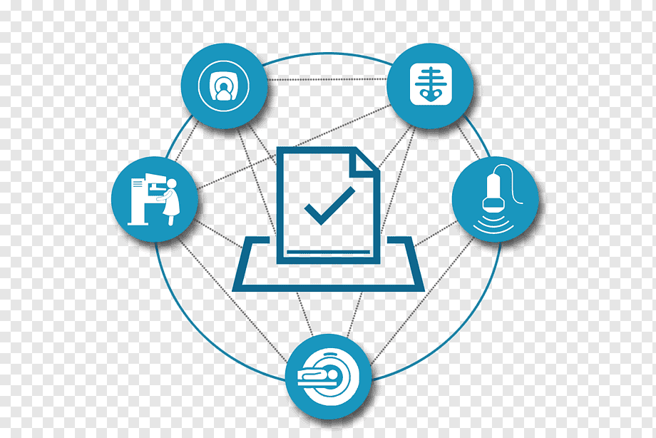

Seguridad web moderna
La seguridad en aplicaciones web es crítica. SSL/TLS, autenticación y validación son pilares.
Aprender buenas prácticas evita vulnerabilidades y pérdidas de datos.
- HTTPS/SSL
- Validación de entradas
- Control de acceso
La seguridad en aplicaciones web es crítica. SSL/TLS, autenticación y validación son pilares.
Aprender buenas prácticas evita vulnerabilidades y pérdidas de datos.
Frameworks y patrones: componentes, accesibilidad y performance.
Herramientas para optimizar el flujo de trabajo: bundlers y linters.

Una buena comprensión de TCP/IP y HTTP es esencial para debugging y arquitectura.
Modelos OSI y práctica ayudan en el análisis de tráfico y diseño de infraestructuras.
